标签闭合、标签小写、不乱嵌套、提高搜索机器人搜索几率、使用外链css和js脚本、结构行为表现的分离、文件下载与页面速度更快、内容能被更多的用户所访问、内容能被更广泛的设备所访问、更少的代码和组件，容易维护、改版方便，不需要变动页面内容、提供打印版本而不需要复制内容、提高网站易用性.
HTML是一种基本的WEB网页标记语言,XHTML是一个基于XML的标记语言.
最主要的不同:
XHTML元素必须正确地嵌套,元素必须被关闭,标签名必须用小写字母,文档必须拥有根元素.
行内元素: a b span img input select strong
块级元素: div p h1~h4 form ul
空元素: br hr img link meta
CSS盒模型:标准盒模型 怪异盒模型.border-box margin-box padding-box
内联 内嵌 外链 导入
(1)link属于HTML标签,而@import是css提供的.
(2)页面被加载时,link会同时被加载,而@import引用的是css,会等到页面加载完再加载.
(3)@import只在IE5以上才能识别,而link是HTML标签,无兼容问题.
(4)link方式的样式的权重高于@import的权重.
工作中建议用link方式导入样式.
新特性及新增元素:
(1)内容元素: header nav article section header
(2)表单控件: calender date time email url search
(3)控件元素: webworker websockt Geolocation
移除元素:
(1)显现层元素: big center font s skrike tt u
(2)性能较差的元素: frame frameset noframes
处理兼容性问题有两种方式:
(1)IE6/7/8支持通过document方法产生的标签,利用这一特性让这些浏览器支持HTML5新标签.
(2)使用html5 shim框架.
另外,DOCTYPE声明的方式是区分HTML和HTML5标志的一个重要因素,此外,还可以根据新增的结构,功能来加以区分.
(1)正确的语义做正确的事情.
(2)html语义化让页面的内容结构化,结构更清晰,便于对浏览器及搜索引擎解析.
(3)即使在没有css样式的情况下,也可以以一种文档格式现实,而且是容易阅读的.
(4)搜索引擎的爬虫也依赖于HTML标记来确定上下文和各个关键字的权重,利于SEO.
(5)对网站进行区块划分,便于阅读维护理解.
1）id 选择器（#myid）
2）类选择器（.myclassname）
3）标签选择器（div，h1，p）
4）相邻选择器（h1 + p）
5）子选择器（ul > li）
6）后代选择器（li a）
7）通配符选择器（* ）
8）属性选择器（ a[rel = "external"]）
9）伪类选择器（a: hover, li: nth-child）
可继承的样式： font-size font-family color, text-indent;
不可继承的样式：border padding margin width height;
优先级就近原则，同权重情况下样式定义最近者为准;
载入样式以最后载入的定位为准
优先级:
!important > id > class > tag
important 比 内联优先级高,但内联比 id 要高.
因为浏览器的兼容问题，不同浏览器对有些标签的默认值是不同的，如果没对 CSS 初始化往往会出现浏览器之间的页面显示差异。
当然，初始化样式会对 SEO 有一定的影响，但鱼和熊掌不可兼得，但力求影响最小的情况下初始化。
最简单的初始化方法是：*{padding:0;margin:0} (不建议)
一般样式初始化：
body, h1, h2, h3, h4, h5, h6, hr, p, blockquote, dl, dt, dd, ul, ol, li, pre, form, fieldset, legend, button, input,
textarea, th, td { margin:0; padding:0; }
body, button, input, select, textarea { font:12px/1.5tahoma, arial, \5b8b\4f53; }
h1, h2, h3, h4, h5, h6{ font-size:100%; }
address, cite, dfn, em, var { font-style:normal; }
code, kbd, pre, samp { font-family:couriernew, courier, monospace; }
small{ font-size:12px; }
ul, ol { list-style:none; }
a { text-decoration:none; }
a:hover { text-decoration:underline; }
sup { vertical-align:text-top; }
sub{ vertical-align:text-bottom; }
legend { color:#000; }
fieldset, img { border:0; }
button, input, select, textarea { font-size:100%; } table { border-collapse:collapse; border-spacing:0; }
absolute:
生成绝对定位的元素， 相对于最近一级的 定位不是 static 的父元素来进行定位.
fixed （老IE不支持）:
生成绝对定位的元素，相对于浏览器窗口进行定位.
relative:
生成相对定位的元素，相对于其在普通流中的位置进行定位.
static 默认值。没有定位，元素出现在正常的流中.
这种情况可在父窗口加上 overflow:auto;zoom:1;这两个样式属性，overflow:auto;是让父容器来自适应内部容器的高度，zoom:1;是为了兼容 IE6而使用的CSS HACK。zoom:1;通不过W3C的验证，这也是遗憾的一点,幸好IE支持[if IE]这种写法，可以专门针对IE来写单独的样式，所以可以把这个属性写在页面内的[if IE]中，这样应该可以通过验证了.
当页面内有多个连续浮动时，如本页的图标列表是采用左浮动，此时设置li的左侧margin值时，在最左侧呈现双倍情况。如外边距设置为10px， 而左侧则呈现出20px，解决它的方法是在浮动元素上加上display:inline;的样式，这样就可避免双倍边距bug.
当使用float浮动容器后，在IE6下会产生3px的空隙，有意思的是右侧容器没设置高度时3px在右侧容器内部，当设定高度后又跑到容器的左侧了。解决方法有几种，对于网上非常流行的给右侧div增加margin-right: -3px我不是很赞同，大大增加了布局的复杂度并且如果父div有设置浮动的话就会失效，简单高效的解决办法是在父div里设置overflow:hidden.
(1)给浮动的元素的祖先元素加高度.有高度的盒子,才能关住浮动.
(2)clear:both.这种清除浮动的方法,有一个严重的问题,会导致margin失效.
(3)隔墙法和内墙法.
(4)overflow:hidden.给浮动元素的父亲加上overflow:hidden,那么父亲就能被儿子撑出高了,是个小偏方.
(5)使用after伪类
#parent:after{
content:".";
height:0;
visibility:hidden;
display:block;
clear:both;
}
标准文档流中,竖直方向的margin不叠加,以较大的为准.
如果不再标准文档流,比如盒子都浮动了,那么两个盒子之间是没有塌陷现象的.
(1)z-index值表示谁压着谁。数值大的压盖住数值小的。
(2)只有定位了的元素，才能有z-index值。也就是说，不管相对定位、绝对定位、固定定位，都可以使用z-index值。而浮动的东西不能用。
(3)z-index值没有单位，就是一个正整数。默认的z-index值是0。
(4)如果大家都没有z-index值，或者z-index值一样，那么谁写在HTML后面，谁在上面能压住别人。定位了的元素，永远能够压住没有定位的元素。
(5)从父现象：父亲怂了，儿子再牛逼也没用。
(1)双边距BUG float引起的 使用display.
(2)超链接hover 点击后失效 使用正确的书写顺序 link visited hover active.
(3)Ie z-index问题 给父级添加position:relative.
(4)Min-height 最小高度 !Important 解决.
(5)select 在ie6下遮盖 使用iframe嵌套.
(6)为什么没有办法定义1px左右的宽度容器(IE6默认的行高造成的，使用over:hidden,zoom:0.08 line-height:1px).
一般来说是针对不同的浏览器写不同的CSS,就是 CSS Hack。
IE浏览器Hack一般又分为三种，条件Hack、属性级Hack、选择符Hack（详细参考CSS文档：css文档）。例如:
// 1、条件Hack
<!--[if IE]>
<style>
.test{color:red;}
</style>
<![endif]-->
// 2、属性Hack
.test{
color:#090\9; /* For IE8+ */
*color:
_color:#ff0; /* For IE6 and earlier */
}
// 3、选择符Hack
* html .test{color:#090;} /* For IE6 and earlier */
* + html .test{color:#ff0;} /* For IE7 */
html{font-size:62.5%}
font-size:2rem == font-size:20px;
min-width&max-width
百分比,不固定像素.
box-sizing:border-box;
文件合并
文件最小化／文件压缩
使用CDN托管
缓存的使用
Object number function boolean underfind
强制(parseInt, parseFloat, number)
隐式(==, ===)
前者是切割成数组的形式，后者是将数组转换成字符串。
Push()尾部添加 pop()尾部删除 Unshift()头部添加 shift()头部删除
1.执行顺序不一样。
2.参数不一样。
3.事件不加on。
4.this指向问题。
Var ev = ev || window.event
document.documentElement.clientWidth || document.body.clientWidth
Var target = ev.srcElement||ev.target
一个在url后面 一个放在虚拟载体里面
有大小限制
安全问题
应用不同 一个是论坛等只需要请求的，一个是类似修改密码的
使用eval parse 鉴于安全性考虑 使用parse更靠谱
Object.call(this, obj1, obj2, obj3);
Object.apply(this, arguments);
一、变量的作用域
要理解闭包，首先必须理解Javascript特殊的变量作用域。 变量的作用域无非就是两种：全局变量和局部变量。
Javascript语言的特殊之处，就在于函数内部可以直接读取全局变量。
二、如何从外部读取局部变量？
出于种种原因，我们有时候需要得到函数内的局部变量。但是，前面已经说过了，正常情况下，这是办不到的，只有通过变通方法才能实现。 那就是在函数的内部，再定义一个函数。
三、闭包的概念
上一节代码中的f2函数，就是闭包。 各种专业文献上的“闭包”（closure）定义非常抽象，很难看懂。我的理解是，闭包就是能够读取其他函数内部变量的函数。
由于在Javascript语言中，只有函数内部的子函数才能读取局部变量，因此可以把闭包简单理解成“定义在一个函数内部的函数”。
所以，在本质上，闭包就是将函数内部和函数外部连接起来的一座桥梁。
四、闭包的用途
闭包可以用在许多地方。它的最大用处有两个，一个是前面提到的可以读取函数内部的变量，另一个就是让这些变量的值始终保持在内存中。
1.总是从ID选择器开始继承。
2.在class前使用tag(标签名)。
在jQuery中第二快的选择器是tag(标签)选择器( 比如：$(“head”) )。
跟ID选择器时，因为它来自原生的getElementsByTagName() 方法。
比如需要选择 红绿 单选框，那么可以使用一个tag name来限制(修饰)class ，如下所示：
var active_light = $(“input.on”);
当然也可以结合 就近的ID，如下所示：
var active_light = $(“#traffic_light input.on”);
在使用tag来修饰class的时候，我们需要注意以下几点：
（1） 不要使用tag来修饰ID，如下所示： var content = $(“div#content”);
这样一来，选择器会先遍历所有的div元素，然后匹配#content。好像jQuery从1.3.1开始改变了选择器核心后，不存在这个问题了。暂时无法考证。）
（2）不要画蛇添足的使用ID来修饰ID，如下所示：
var traffic_light = $(“#content #traffic_light”);
3.将jQuery对象缓存起来
把jQuery对象缓存起来 就是要告诉我们 要养成将jQuery对象缓存进变量的习惯。
下面是一个jQuery新手写的一段代码：
$("#traffic_light input.on").bind("click", function(){ });
$("#traffic_light input.on").css("border", "1px dashed yellow");
$("#traffic_light input.on").css("background-color", "orange");
$("#traffic_light input.on").fadeIn("slow");
但切记不要这么做。
我们应该先将对象缓存进一个变量然后再操作，如下所示：
var $active_light = $("#traffic_light input.on");
$active_light.bind("click", function(){ });
$active_light.css("border", "1px dashed yellow");
$active_light.css("background-color", "orange");
$active_light.fadeIn("slow");
记住，永远不要让相同的选择器在你的代码里出现多次.
4.对直接的DOM操作进行限制
这里的基本思想是在内存中建立你确实想要的东西，然后更新DOM 。
这并不是一个jQuery最佳实践，但必须进行有效的JavaScript操作 。直接的DOM操作速度很慢。
例如，你想动态的创建一组列表元素，千万不要这样做,如下所示：
var top_100_list = [], // 假设这里是100个独一无二的字符串
$mylist = $("#mylist"); // jQuery 选择到元素
5.冒泡
除非在特殊情况下, 否则每一个js事件(例如:click, mouseover等.)都会冒泡到父级节点。
当我们需要给多个元素调用同个函数时这点会很有用。
代替这种效率很差的多元素事件监听的方法就是, 你只需向它们的父节点绑定一次。
比如, 我们要为一个拥有很多输入框的表单绑定这样的行为: 当输入框被选中时为它添加一个class 传统的做法是，直接选中input，然后绑定focus等，如下所示：
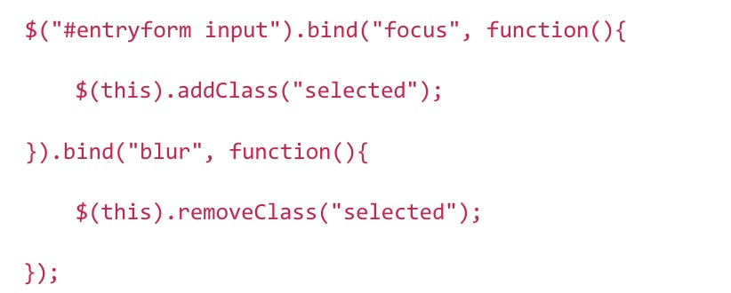
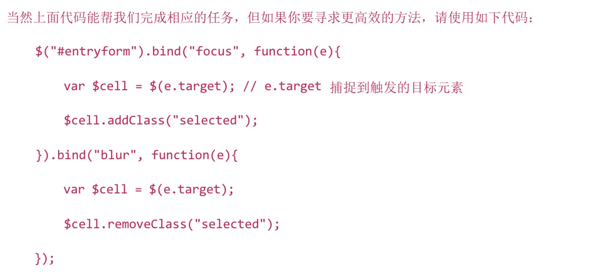
通过在父级监听获取焦点和失去焦点的事件，对目标元素进行操作。
在上面代码中，父级元素扮演了一个调度员的角色, 它可以基于目标元素绑定事件。
如果你发现你给很多元素绑定了同一个事件监听, 那么现在的你肯定知道哪里做错了。
6.推迟到$(windwo).load
jQuery对于开发者来说有一个很诱人的东西, 可以把任何东西挂到$(document).ready下。
尽管$(document).rady 确实很有用， 它可以在页面渲染时，其它元素还没下载完成就执行。
如果你发现你的页面一直是载入中的状态，很有可能就是$(document).ready函数引起的。
你可以通过将jQuery函数绑定到$(window).load 事件的方法来减少页面载入时的cpu使用率。
它会在所有的html(包括iframe)被下载完成后执行。
一些特效的功能，例如拖放, 视觉特效和动画, 预载入隐藏图像等等，都是适合这种技术的场合。
7.压缩Javascript
8.尽量使用ID代替Class。
9.慎用 .live()方法（应该说尽量不要使用）
这是jQuery1.3.1版本之后增加的方法，这个方法的功能就是为 新增的DOM元素 动态绑定事件。
但对于效率来说，这个方法比较占用资源。所以请尽量不要使用它。
javascript创建对象简单的说,无非就是使用内置对象或各种自定义对象，当然还可以用JSON；但写法有很多种，也能混合使用。
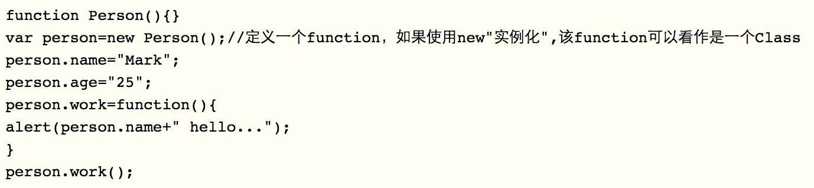
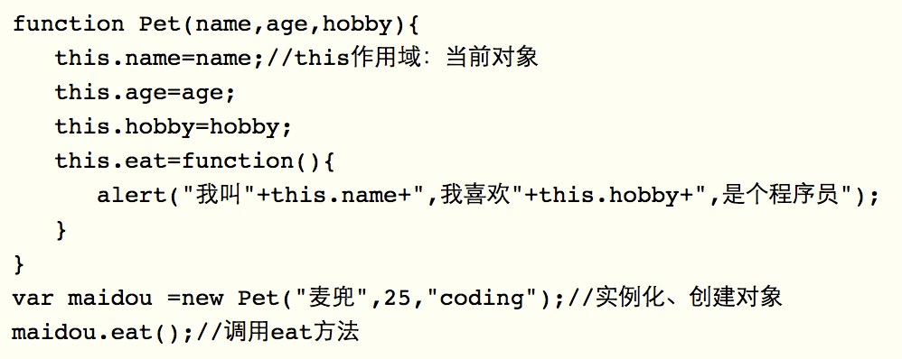
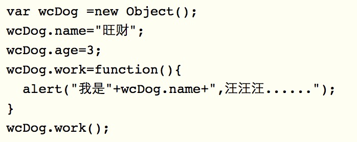
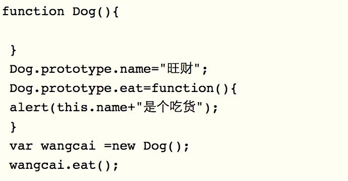
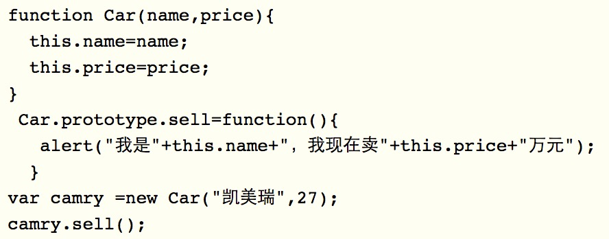
全局函数无法查看局部函数的内部细节，但局部函数可以查看其上层的函数细节，直至全局细节。 当需要从局部函数查找某一属性或方法时，如果当前作用域没有找到，就会上溯到上层作用域查找， 直至全局函数，这种组织形式就是作用域链。
this总是指向函数的直接调用者（而非间接调用者）；
如果有new关键字，this指向new出来的那个对象；
在事件中，this指向触发这个事件的对象，特殊的是，IE中的attachEvent中的this总是指向全局对象Window；
它的功能是把对应的字符串解析成JS代码并运行；
应该避免使用eval，不安全，非常耗性能（2次，一次解析成js语句，一次执行）。
由JSON字符串转换为JSON对象的时候可以用eval，var obj =eval('('+ str +')');
它的功能是把对应的字符串解析成JS代码并运行；
应该避免使用eval，不安全，非常耗性能（2次，一次解析成js语句，一次执行）。
由JSON字符串转换为JSON对象的时候可以用eval，var obj =eval('('+ str +')');
jsonp、 iframe、window.name、window.postMessage、服务器上设置代理页面。
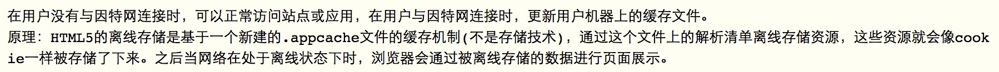
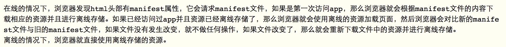
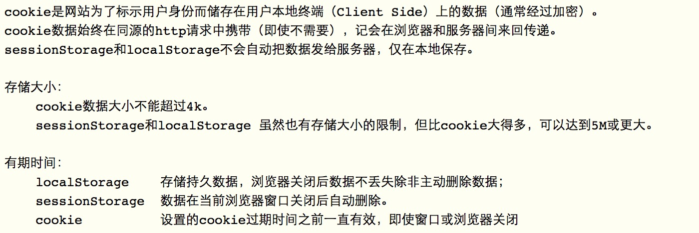
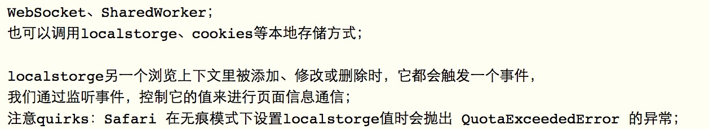
Canvas 元素用于在网页上绘制图形，该元素标签强大之处在于可以直接在 HTML 上进行图形操作。
Media API、Text Track API、Application Cache API、User Interaction、Data Transfer API、Command API、Constraint Validation API、History API.
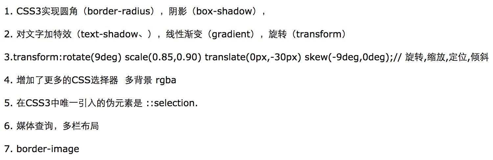
p:first-of-type 选择属于其父元素的首个元素的每个元素。
p:last-of-type 选择属于其父元素的最后元素的每个元素。
p:only-of-type 选择属于其父元素唯一的元素的每个元素。
p:only-child 选择属于其父元素的唯一子元素的每个元素。
p:nth-child(2) 选择属于其父元素的第二个子元素的每个元素。
:enabled、:disabled 控制表单控件的禁用状态。
:checked，单选框或复选框被选中。